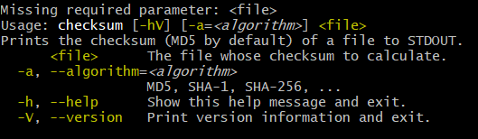
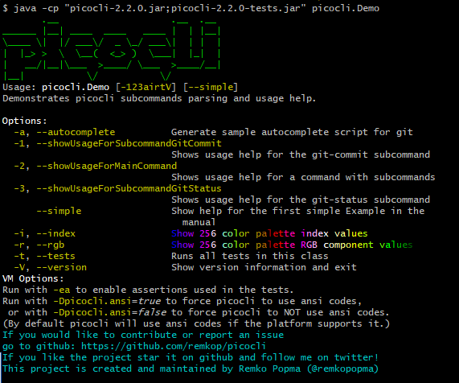
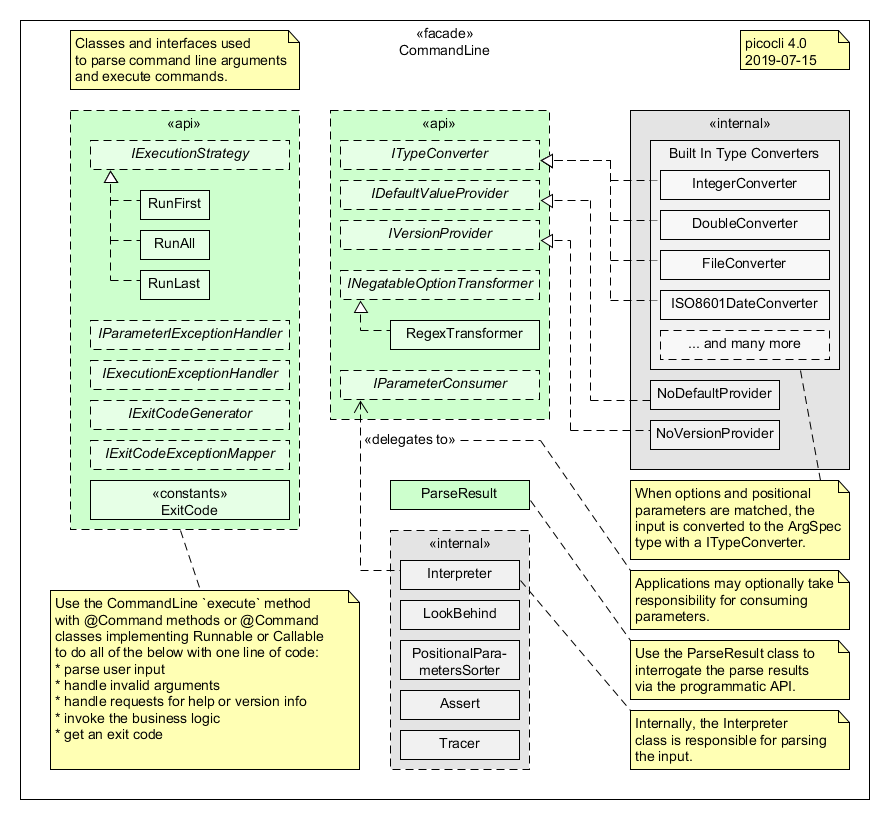

a mighty tiny command line processor
Picocli is a one-file framework for creating JVM command line applications (in Java, Groovy, Kotlin, Scala, etc.) with almost zero code. It has an annotations API and a programmatic API, and features usage help with ANSI colors, command line autocompletion and support for nested subcommands. Its source code lives in a single file, so you have the option to include it in source form; this lets end users run picocli-based applications without requiring picocli as an external dependency.
Example
Let’s take a look at an example to see what a picocli-based command line application looks like.
A CheckSum Utility
We will use this small, but realistic, example CheckSum utility to demonstrate various picocli features.
1
2
3
4
5
6
7
8
9
10
11
12
13
14
15
16
17
18
19
20
21
22
23
24
25
@Command(description = "Prints the checksum (SHA-1 by default) of a file to STDOUT.",
name = "checksum", mixinStandardHelpOptions = true, version = "checksum 3.0")
class CheckSum implements Callable<Void> {
@Parameters(index = "0", description = "The file whose checksum to calculate.")
private File file;
@Option(names = {"-a", "--algorithm"}, description = "MD5, SHA-1, SHA-256, ...")
private String algorithm = "SHA-1";
public static void main(String[] args) {
// CheckSum implements Callable, so parsing, error handling and handling user
// requests for usage help or version help can be done with one line of code.
CommandLine.call(new CheckSum(), args);
}
@Override
public Void call() throws Exception {
// your business logic goes here...
byte[] fileContents = Files.readAllBytes(file.toPath());
byte[] digest = MessageDigest.getInstance(algorithm).digest(fileContents);
System.out.printf("%0" + (digest.length*2) + "x%n", new BigInteger(1,digest));
return null;
}
}
Given that this program has only 25 lines of code, you may be surprised at how much functionality it packs.
Let’s run this program, first without any input:
$ java picocli.example.CheckSum
This gives an error message saying the <file> parameter is missing:

The <file> positional parameter does not have a default, so this a mandatory parameter. The --algorithm option does have a default: "SHA-1", so it is optional.
Note that our program does not have any logic to validate the user input. The validation was done automatically by picocli as part of the CommandLine.call(Callable, String[]) invocation in our main method. Later we will show some alternatives that give more control to the application.
Now let’s try running this program with some valid input, and see how the output compares to the GNU md5sum and sha1sum utilities:
CheckSum utility against md5sum and sha1sum$ java picocli.example.CheckSum --algorithm=MD5 picocli-3.9.5.jar 509e3e2602854d5b88e2e7baa476a7fe $ md5sum picocli-3.9.5.jar 509e3e2602854d5b88e2e7baa476a7fe *picocli-3.9.5.jar $ java picocli.example.CheckSum picocli-3.9.5.jar f659a2feef0e8f7f8458aaf7d36c4d92f65320c8 $ sha1sum picocli-3.9.5.jar f659a2feef0e8f7f8458aaf7d36c4d92f65320c8 *picocli-3.9.5.jar
The hashes are identical. It looks like our checksum utility is working correctly.
You may have noticed that the error message above showed two more options: --help and --version, even though the application does not define any options like @Option(names = {"-h", "--help"}) or similar for version. Where are these coming from?
These two options were added because we defined the command with @Command(mixinStandardHelpOptions = true /* … */). Usage help and version information are so common for command line applications that picocli provides this shortcut. Internally this uses a mechanism called "mixins" and we will go into more detail later on how you can define your own mixins to define reusable elements. But first, let’s see what these options actually do, starting with the --version option.
$ java picocli.example.CheckSum --version checksum 3.0
The version information shown is what was specified in the command annotation: @Command(version = "checksum 3.0" /* … */). We will show later that you can also get the version information from a JAR file’s manifest or some other place. Next, the --help option:
$ java picocli.example.CheckSum --help
Usage: checksum [-hV] [-a=<algorithm>] <file>
Prints the checksum (SHA-1 by default) of a file to STDOUT.
<file> The file whose checksum to calculate.
-a, --algorithm=<algorithm>
MD5, SHA-1, SHA-256, ...
-h, --help Show this help message and exit.
-V, --version Print version information and exit.
The usage help message looks familiar; it is what was shown after the error message "Missing required parameter: <file>" when we gave the program invalid input. The synopsis (after "Usage:") shows the command name as checksum, since that is what we specified in the command definition @Command(name = "checksum" /* … */).
To summarize, we just created a full-fledged application with all the bells and whistles expected from a production-quality command line utility, using a minimal amount of code.
What’s Next in this Article
In the rest of this article we will take a quick tour of picocli’s capabilities.
First we will go into some detail of defining commands with options and positional parameters, how picocli converts argument Strings to strongly typed option values, how to define options that can be specified multiple times, including map options like -Dkey=value.
Next, we will show how to customize the usage help and version help, and liven things up with ANSI colors.
Many larger command line applications have subcommands, git being a famous example. We will show how picocli makes it very easy to create commands with subcommands, and how you can use mixins to reuse common options or common command configurations.
After that, we will take a look at picocli’s "entry points": there are methods for just parsing command line parameters and there are "convenience methods" that parse the user input and automatically invoke the business logic of your application.
Furthermore this article will explain how picocli can give your application autocompletion in bash and zsh, how Groovy scripts can use the picocli annotations, and how to build command line applications that integrate with Dependency Injection containers like Spring Boot and Micronaut.
Finally, we will briefly touch on how picocli can be used to create interactive shell applications with the JLine library, and wrap up with a small tutorial for creating native executables with GraalVM to make amazingly fast command line tools.
Defining a Picocli Command
Picocli offers an annotations API and a programmatic API. The programmatic API is useful for dynamically creating commands and command line options on the fly. Typical use cases are domain-specific languages. For example, Groovy’s CliBuilder is implemented using picocli’s programmatic API. Details of the programmatic API are out of scope of this article, but are documented on the project GitHub site. In this article we will focus on the annotations API.
To define a command or a subcommand, annotate a class or a method with @Command. The @Command annotation can be omitted, but is a convenient way to set the command name, description, and other elements of the usage help message. Subcommands can be specified in the @Command annotation but can also be added to a command programmatically.
To define options and positional parameters, annotate a field or a method with @Option or @Parameters. Here is an example of a minimal command:
class Minimal {
@Option(names = "-x") int x;
}There is a separate section on subcommands below, but first we will discuss options and positional parameters.
Options and Positional Parameters
Command line arguments can be separated into options and positional parameters. Options have a name, positional parameters are values without a name. Positional parameters often follow the options, but they may be mixed.

Picocli has separate annotations for options and positional parameters. The @Option and @Parameters annotations can be used on fields and on methods. Annotated methods can be useful to do validation on single options and positional parameters. In the examples below we will mostly use annotated fields.
Option Names
There are no restrictions on the option name prefix: applications are free to create Windows DOS-style options like /A /B, Unix POSIX-style short options like -x -y, GNU-style long options like --long-option or anything else. You can also use all styles together for a single option if you want. An option can have as many names as you want.
Picocli does have special support for POSIX-style short options, in the sense that the parser recognizes clustered short options. For example, given the following command definition:
@Command(name = "tar")
class Tar {
@Option(names = "-x") boolean extract;
@Option(names = "-v") boolean verbose;
@Option(names = "-f") File file;
}Picocli will consider the following two inputs equivalent to each other:
tar -xvfTARFILE tar -x -v -f TARFILE
Default Values
As we already saw earlier with the CheckSum example in the beginning of this article, an easy way to give an option or positional parameter a default value is to assign the annotated field a value in its declaration. The initial value becomes the default value:
@Option(names = "-x")
double multiplier = Double.PI;
@Parameters
File file = new File(System.getProperty("user.home"));Both the @Option and the @Parameters annotations also have a defaultValue attribute where a default value can be specified. This is especially useful for annotated methods. For example:
@Option(names = "-x", defaultValue = "123", paramLabel = "MULTIPLIER",
description = "The multiplier, ${DEFAULT-VALUE} by default.")
void setMultiplier(int multiplier) { this.multiplier = multiplier; }
@Parameters(defaultValue = ".", paramLabel = "DIRECTORY",
description = "The directory to write to, '${DEFAULT-VALUE}' by default.")
void setDirectory(File directory) { this.directory = directory; }Two things to note: the description may contain a ${DEFAULT-VALUE} variable that will be replaced with the option’s default value in the usage help message. Also, use the paramLabel to specify the name of the option parameter or positional parameter in the usage help. For example:
${DEFAULT-VALUE} variablesDIRECTORY The directory to write to, '.' by default. -x=MULTIPLIER The multiplier, 123 by default.
An alternative is to implement the IDefaultProvider interface, for example to get defaults from a properties file. The interface looks like the below.
IDefaultProvider interface for externalizing default valuespublic interface IDefaultValueProvider {
String defaultValue(ArgSpec argSpec) throws Exception;
}
The ArgSpec class is part of the programmatic API and is the superclass of OptionSpec and PositionalParamSpec.
|
The default provider can be wired into the command via the @Command annotation:
@Command(defaultProvider = MyDefaultProvider.class)
class MyCommand { /*...*/ }Password Options
For options and positional parameters marked as interactive, the user is prompted to enter a value on the console. When running on Java 6 or higher, the user input is not echoed to the console.
Example usage:
class Login implements Callable<Object> {
@Option(names = {"-u", "--user"}, description = "User name")
String user;
@Option(names={"-p", "--passphrase"}, interactive=true, description="Passphrase")
String password;
public Object call() throws Exception {
MessageDigest md = MessageDigest.getInstance("SHA-256");
md.update(password.getBytes());
System.out.printf("Hi %s, your passphrase is hashed to %s.%n", user,
Base64.getEncoder().encodeToString(md.digest()));
return null;
}
}When this command is invoked like this:
CommandLine.call(new Login(), "-u", "user123", "-p");Then the user will be prompted to enter a value:
Enter value for --passphrase (Passphrase):After the user enters a password value and presses enter, the call() method is invoked, which prints something like the following:
Hi user123, your passphrase is hashed to 75K3eLr+dx6JJFuJ7LwIpEpOFmwGZZkRiB84PURz6U8=.Positional Parameters
Any command line arguments that are not subcommands or options (or option parameters) are interpreted as positional parameters.
Use the (zero-based) index attribute to specify exactly which parameters to capture. Omitting the index attribute means the field captures all positional parameters. Array or collection fields can capture multiple values.
The index attribute accepts range values, so an annotation like @Parameters(index="2..4") captures the arguments at index 2, 3 and 4. Range values can be open-ended. For example, @Parameters(index="3..*") captures all arguments from index 3 and up.
For example:
index attributeclass PositionalParameters {
@Parameters(hidden = true) // "hidden": don't show this param in usage help
List<String> allParameters; // no "index" attribute: captures _all_ arguments
@Parameters(index = "0") InetAddress host;
@Parameters(index = "1") int port;
@Parameters(index = "2..*") File[] files;
}Type Conversion
When arguments are matched on the command line, the text value is converted to the type of the option or positional parameter. For annotated fields this is the type of the field.
Out of the box, picocli supports many common types: all primitive types and their wrapper types, any enum type, BigDecimal, BigInteger, File, Path, URL, URI, InetAddress, java.util.regex.Pattern, Date, Time, Timestamp, all value objects in Java 8’s java.time package, and more. See the user manual for the full list.
If necessary, applications can customize and extend this by defining their own type converters. The ITypeConverter interface looks like this:
ITypeConverter interfacepublic interface ITypeConverter<K> {
K convert(String value) throws Exception;
}Custom type converters can be registered with the CommandLine::registerConverter(Class, ITypeConverter) method. All options and positional parameters with the specified type will be converted by the specified converter. For example:
CommandLine cmd = new CommandLine(app)
cmd.registerConverter(Locale.class, s -> new Locale.Builder().setLanguageTag(s).build());
cmd.registerConverter(Cipher.class, s -> Cipher.getInstance(s));Type converters can also be registered for specific options and positional parameters:
class App {
@Option(names = "--sqlType", converter = SqlTypeConverter.class)
int sqlType;
}
class SqlTypeConverter implements ITypeConverter<Integer> {
public Integer convert(String value) throws Exception {
switch (value) {
case "ARRAY" : return Types.ARRAY;
case "BIGINT" : return Types.BIGINT;
...
}
}
}Multiple Values
Multiple parameters, or multiple occurrences of an option can be captured in an array, Map or Collection field. The elements can be of any type for which a converter is registered. For example:
import java.util.regex.Pattern;
import java.io.File;
class Convert {
@Option(names = "-patterns", description = "the regex patterns to use")
Pattern[] patterns;
@Parameters(/* type = File.class, */ description = "the files to convert")
List<File> files; // picocli infers type from the generic type
@Option(names = "-D") // support -Dkey=value properties
Map<String, String> properties;
@Option(names = {"-u", "--timeUnit"})
Map<TimeUnit, Long> timeout; // picocli infers type from the generic type
}String[] args = { "-patterns", "a*b", "-patterns", "[a-e][i-u]",
"file1.txt", "file2.txt",
"-uDAYS=3", "-u", "HOURS=23", "-u=MINUTES=59",
"--timeUnit=SECONDS=13", "-Dkey=value" };
Convert convert = CommandLine.populateCommand(new Convert(), args);
// convert.patterns now has two Pattern objects
// convert.files now has two File objects
// convert.timeout now has four {TimeUnit:Long} key-value pairsSplit Regex
Options and parameters may specify a split regular expression used to split each option parameter into smaller substrings. Each of these substrings is converted to the type of the collection or array.
split regex@Option(names = "-option", split = ",")
int[] values;A single command line argument like the following will be split up and three int values are added to the array:
-option 111,222,333
Dynamic Version Information
Remember that the CheckSum example showed version information from a static @Command(version = "xxx") attribute? Often you want to manage version information in a single place, and have picocli obtain this information dynamically at runtime. For example, an implementation may return version information obtained from the JAR manifest, a properties file or some other source.
The @Command annotation supports a versionProvider attribute, where applications can specify a IVersionProvider implementation class:
@Command(versionProvider = my.custom.VersionProvider.class)
class App { ... }Custom version providers need to implement the picocli.CommandLine.IVersionProvider interface:
IVersionProvider interface for externalizing version informationpublic interface IVersionProvider {
String[] getVersion() throws Exception;
}See the VersionProviderDemo classes in the picocli-examples module on GitHub for examples of getting the version from the JAR manifest file or a version properties file.
Usage Help
We have already seen some of the annotation attributes that can be used to customize aspects of the usage help message. For example, the @Command(name = "xxx") to set the command name, the paramLabel attribute to set the name of the option parameter or positional parameter, and the ${DEFAULT-VALUE} variable in the description of options or positional parameters.
There is also a ${COMPLETION-CANDIDATES} variable that can be used in the description of an option or positional parameter that will be expanded into the values of an enum, or the completionCandidates of a non-enum option.
Below follow a few more annotation attributes for customizing the usage help message.
Usage Width
The default width of the usage help message is 80 characters. This can be modified with the @Command(usageHelpWidth = <int>) attribute. End users can override with system property picocli.usage.width.
Section Headings
Section headings can be used to make usage message layout appear more spacious. The example below demonstrates the use of embedded line separator (%n) format specifiers:
@Command(name = "commit",
sortOptions = false,
headerHeading = "Usage:%n%n",
synopsisHeading = "%n",
descriptionHeading = "%nDescription:%n%n",
parameterListHeading = "%nParameters:%n",
optionListHeading = "%nOptions:%n",
header = "Record changes to the repository.",
description = "Stores the current contents of the index in a new commit " +
"along with a log message from the user describing the changes.")
class GitCommit { ... }The below example demonstrates what a customized usage message with more vertical spacing and custom headings can look like.

Option Ordering
By default, options are sorted alphabetically. You can switch this off by setting @Command(sortOptions = false). This will show options in the order they are declared in the class. You can explicitly specify the order in which they should be listed with the @Option(order = <int>) attribute.
Abbreviated Synopsis
If a command is very complex and has many options, it is sometimes desirable to suppress details from the synopsis with the @Command(abbreviateSynopsis = true) attribute. An abbreviated synopsis looks something like this:
Usage: <main class> [OPTIONS] [<files>...]
Note that the positional parameters are not abbreviated.
Custom Synopsis
For even more control of the synopsis, use the customSynopsis attribute to specify one or more synopsis lines. For example:
Usage: ln [OPTION]... [-T] TARGET LINK_NAME (1st form) or: ln [OPTION]... TARGET (2nd form) or: ln [OPTION]... TARGET... DIRECTORY (3rd form) or: ln [OPTION]... -t DIRECTORY TARGET... (4th form)
To produce a synopsis like the above, specify the literal text in the customSynopsis attribute:
customSynopsis attribute to define a multi-line custom synopsis@Command(synopsisHeading = "", customSynopsis = {
"Usage: ln [OPTION]... [-T] TARGET LINK_NAME (1st form)",
" or: ln [OPTION]... TARGET (2nd form)",
" or: ln [OPTION]... TARGET... DIRECTORY (3rd form)",
" or: ln [OPTION]... -t DIRECTORY TARGET... (4th form)",
})
class Ln { ... }Hidden
The @Command, @Option and @Parameters annotations all have a hidden attribute. Setting this attribute to true means the subcommand, option or parameters won’t be shown in the usage help message.
ANSI Colors
Picocli generates help that uses ANSI styles and colors for contrast to emphasize important information like commands, options, and parameters. The default color scheme for these elements can be overridden programmatically and with system properties.
In addition, you can use colors and styles in the descriptions, header and footer of the usage help message.
Picocli supports a custom markup notation for mixing colors and styles in text, where @| starts a styled section, and |@ ends it. Immediately following the @| is a comma-separated list of colors and styles, so @|STYLE1[,STYLE2]… text|@. For example:
@Command(description = "Custom @|bold,underline styles|@ and @|fg(red) colors|@.")
Adding a banner is easy. The usage help is the face of your application, so be creative!
header to define a banner@Command(header = {
"@|green .__ .__ .__ |@",
"@|green ______ |__| ____ ____ ____ | | |__||@",
"@|green \\____ \\| |/ ___\\/ _ \\_/ ___\\| | | ||@",
"@|green | |_> > \\ \\__( <_> ) \\___| |_| ||@",
"@|green | __/|__|\\___ >____/ \\___ >____/__||@",
"@|green |__| \\/ \\/ |@",
""}, // ...
Subcommands
When your application grows larger, it often makes sense to organize pieces of functionality into subcommands. Git, Angular, Docker, and Puppet are examples of applications that make good use of subcommands.
Picocli has extensive support for subcommands: subcommands are easy to create, can have multiple aliases, and can be nested to any level.
Subcommands can be registered declaratively with the @Command annotation’s subcommands attribute, like this:
@Command(subcommands = {
GitStatus.class,
GitCommit.class,
GitAdd.class // ...
})
public class Git { ... }Alternatively, subcommands can be registered programmatically with the CommandLine.addSubcommand method, like this:
addSubcommandCommandLine commandLine = new CommandLine(new Git())
.addSubcommand("status", new GitStatus())
.addSubcommand("commit", new GitCommit())
.addSubcommand("add", new GitAdd());A third, more compact, way to register subcommands is to have a @Command class with @Command-annotated methods. The methods are automatically registered as subcommands of the @Command class. For example:
@Command-annotated methods are registered as subcommands of the enclosing @Command class@Command(name = "git", resourceBundle = "Git_Messages")
class Git {
@Option(names = "--git-dir", descriptionKey = "GITDIR") // description from bundle
Path path;
@Command
void commit(@Option(names = {"-m", "--message"}) String commitMessage,
@Parameters(paramLabel = "<file>") File[] files) {
// ... implement business logic
}
}
With @Command methods it may be useful to put the option and parameters descriptions in a resource bundle to avoid cluttering the code.
|
Mixins for Reuse
You may find yourself defining the same options, parameters or command attributes in many command line applications. To reduce duplication, picocli supports both subclassing and mixins as ways to reuse such options and attributes. In this section we will focus on mixins.
For example, let’s say that we want to reuse some usage help attributes that give a spacious layout, and a verbosity option. We create a ReusableOptions class, like this:
@Command(synopsisHeading = "%nUsage:%n%n",
descriptionHeading = "%nDescription:%n%n",
parameterListHeading = "%nParameters:%n%n",
optionListHeading = "%nOptions:%n%n",
commandListHeading = "%nCommands:%n%n")
public class ReusableOptions {
@Option(names = { "-v", "--verbose" }, description = {
"Specify multiple -v options to increase verbosity.",
"For example, `-v -v -v` or `-vvv`" })
protected boolean[] verbosity = new boolean[0];
}A command can include a mixin by annotating a field with @Mixin. All picocli annotations found in the mixin class are added to the command that has a field annotated with @Mixin. The following example shows how we would mix in the sample ReusableOptions class defined above:
@Mixin annotation to apply reusable attributes to a command@Command(name = "zip", description = "Example reuse with @Mixin annotation.")
public class MyCommand {
// adds the options defined in ReusableOptions to this command
@Mixin
private ReusableOptions myMixin;
...
}This adds the -v option to the zip command. After parsing, the results can be obtained from the annotated fields as usual:
MyCommand zip = CommandLine.populateCommand(new MyCommand(), "-vvv");
// the options defined in ReusableOptions have been added to the zip command
assert zip.myMixin.verbosity.length == 3;Parsing and Running a Picocli Application
The general outline of any command line application is:
-
define the top-level command and its subcommands
-
define options and positional parameters
-
parse the user input
-
inspect the result
The previous sections explained how to define commands with options and positional parameters. For reference, the diagram below gives a high-level overview of the classes and interfaces involved in defining commands.

In the following sections we discuss parsing and running picocli applications. In our examples we will use the minimal command that we saw earlier:
class Minimal {
@Option(names = "-x") int x;
}For the next step, parsing the user input, there are broadly two approaches: either just parse the input, or parse the input and run the business logic.
Simply Parsing
The static method CommandLine::populateCommand accepts a command object and an array of command line arguments. It parses the input, injects values for matched options and positional parameters into the annotated elements of the command, and returns the command object. For example:
populateCommand method for simple use casesString[] args = new String[] {"-x", "5"};
Minimal result = CommandLine.populateCommand(new Minimal(), args);
assert result.x == 5;The populateCommand static method is useful for very straightforward commands and for testing, but is limited. To customize the parser behaviour you need to create a CommandLine instance and call the parseArgs method:
parseArgs method for more flexibilityMinimal minimal = new Minimal();
CommandLine cmd = new CommandLine(minimal)
.setUnmatchedArgumentsAllowed(true); // configure parser to accept unknown args
cmd.parseArgs("-x", "5", "-y=unknown");
assert minimal.x == 5;
assert cmd.getUnmatchedArguments().equals(Arrays.asList("-y=unknown"));Parsing and Running
The above examples are a bit academic. A real-world application needs to be more robust, specifically:
-
Handle invalid user input, and report any problems to the user (potentially suggesting alternative options and subcommands for simple typos if we want to get fancy).
-
Check if the user requested usage help, and print this help and abort processing if this was the case.
-
Check if the user requested version information, and print this information and abort processing if this was the case.
-
Finally, run the business logic of the application.

The above is so common that picocli provides some shortcuts, the so-called "convenience" methods. These methods take care of invalid user input and requests for usage help and version information as described above.
-
CommandLinestatic methodsrun,callandinvokeaccept a Runnable, Callable or a@Command-annotated Method object. Any subcommands constructed from the annotations must also be@Command-annotated Methods or classes implementing Runnable or Callable. After the input was parsed successfully, the Runnable, Callable or Method for the subcommand specified by the end user on the command line is invoked. -
CommandLineinstance methodsparseWithHandlerandparseWithHandlerscalls the specified result handler when parsing succeeds, or the exception handler when an error occurred. Therun,callandinvokestatic methods delegate to this method with the default result handler (RunLast) and default exception handler.
The default result handler (RunLast) takes care of requests for usage help and version information as described above, and invokes the most specific subcommand. The default exception handler takes care of invalid user input and runtime errors in the business logic.
The static run, call and invoke methods are simple and straightforward but are limited in that they won’t allow you to customize the parser behaviour or the usage help message. The parseWithHandler methods are more verbose but more flexible. For example:
parseWithHandler method for more flexibilityclass MyRunnable implements Runnable {
@Option(names = "-x") int x;
public void run() {
System.out.println("You specified " + x);
}
}
CommandLine cmd = new CommandLine(new MyRunnable())
.setCommandName("myRunnable") // customize usage help message
.setUnmatchedArgumentsAllowed(true); // customize parser behaviour
cmd.parseWithHandler(new RunLast(), "-x", "5");Inspecting the Parse Result
After parsing, the application needs to inspect the specified options and positional parameters to determine what action to take. When using the annotations API, the most straightforward thing to do is to inspect the value of the fields annotated with @Option and @Parameters.
When options and positional parameters were defined programmatically instead of with the annotations API, the alternative is to inspect the ParseResult object returned by the CommandLine::parseArgs method.
Via the ParseResult class the application can determine whether an option or positional parameter was specified on the command line, what its value was, whether the user requested usage help or version info, whether a subcommand was specified, whether any undefined options were specified, and more. For example:
ParseResult class for inspecting the parse resultsCommandLine cmd = new CommandLine(new Minimal());
ParseResult parseResult = cmd.parseArgs("-x", "5");
int defaultValue = -1;
assert parseResult.hasMatchedOption("-x");
assert parseResult.matchedOptionValue("-x", defaultValue) == 5;Autocompletion
Picocli-based applications can have command line completion in Bash or ZSH Unix shells. Picocli can generate an autocompletion script tailored to your application.
With this script installed, users can type the first few letters of a subcommand or an option, then press the TAB key, and the Unix shell will complete the subcommand or option.
In the case of multiple possible completions, the Unix shell will display all subcommands or options beginning with those few characters. The user can type more characters and press TAB again to see a new, narrowed-down list if the typed characters are still ambiguous, or else complete the subcommand or option.
Generating a Completion Script
First, we need to create a starter script to run our command line application. The name of this script will be the name of our command.
In this example we will use the CheckSum application from the beginning of this article. Let’s say we want to call our command checksum, so we create a starter script called checksum, with the following contents:
checksum starter script#!/usr/bin/env bash
LIBS=/home/user/me/libs
CP="${LIBS}/checksum.jar:${LIBS}/picocli-3.9.5.jar"
java -cp "${CP}" 'picocli.example.CheckSum' $@You probably want to chmod 755 checksum to make the script executable. Try calling it on the command line with ./checksum --version to see if the script works.
Next, we generate the completion script for our checksum command. To do this, we invoke picocli.AutoComplete, and give it the name of the class and the name of the command:
$ java -cp "checksum.jar:picocli-3.9.5.jar" picocli.AutoComplete -n checksum picocli.example.CheckSumThis will generate a file called checksum_completion in the current directory.
Installing the Completion Script
Simply source the completion script to install it in your current bash session:
$ . checksum_completionNow, if you type checksum [TAB] the bash shell will show the available options for this command.
To install the completion script permanently, add it to your .bash_profile. Below is a one-liner that adds all completion scripts in the current directory to your .bash_profile. It will not create duplicate entries, so it can be invoked multiple times.
.bash_profile$ for f in $(find . -name "*_completion"); do line=". $(pwd)/$f"; grep "$line" ~/.bash_profile || echo "$line" >> ~/.bash_profile; doneCompletion Candidates
Other than options and subcommands, picocli can deduce completion candidates for parameters of certain types. For example, File, Path, InetAddress and enum types allow picocli to generate completion candidates from the current directory, your /etc/hosts file, and the enum values, respectively.
Additionally, you can specify completionCandidates for an option. For example, in the CheckSum application, we can get completion for the --algorithms option parameter by defining the option as follows:
completionCandidates for an option to allow autocompletion on option parametersprivate static class AlgoList extends ArrayList<String> {
AlgoList() { super(Arrays.asList("MD5", "SHA-1", "SHA-256")); }
}
@Option(names = {"-a", "--algorithm"}, completionCandidates = AlgoList.class,
description = "${COMPLETION-CANDIDATES}, ...")
private String algorithm = "SHA-1";Values in the completionCandidates list are shown as completion candidates when the user presses [TAB] after the -a option, similarly to enum typed options.
Groovy Scripts
Picocli offers special support for Groovy scripts, to allow the picocli annotations to be used directly in the script without creating a class. All that is needed is to add the @picocli.groovy.PicocliScript annotation to the script. For example:
1
2
3
4
5
6
7
8
9
10
11
12
13
14
15
16
17
18
19
20
21
22
23
24
25
26
27
28
29
30
31
32
@Grab('info.picocli:picocli:3.9.5')
@Command(header = [
$/@|green ___ ___ _ _ |@/$,
$/@|green / __|_ _ ___ _____ ___ _ / __| |_ ___ __| |__ ____ _ _ __ |@/$,
$/@|green | (_ | '_/ _ \/ _ \ V / || | | (__| ' \/ -_) _| / /(_-< || | ' \ |@/$,
$/@|green \___|_| \___/\___/\_/ \_, | \___|_||_\___\__|_\_\/__/\_,_|_|_|_||@/$,
$/@|green |__/ |@/$
],
description = "Print a checksum of each specified FILE.",
mixinStandardHelpOptions = true, version = 'checksum v1.2.3',
footerHeading = "%nFor more details, see:%n", showDefaultValues = true,
footer = [
"[1] https://docs.oracle.com/javase/9/docs/specs/security/standard-names.html",
"ASCII Art thanks to http://patorjk.com/software/taag/" ]
)
@picocli.groovy.PicocliScript
import groovy.transform.Field
import java.security.MessageDigest
import static picocli.CommandLine.*
@Parameters(arity = "1", paramLabel = "FILE",
description = "The file(s) whose checksum to calculate.")
@Field private File[] files
@Option(names = ["-a", "--algorithm"], description = [
"MD2, MD5, SHA-1, SHA-256, SHA-384, SHA-512, or",
" any other MessageDigest algorithm. See [1] for more details."])
@Field private String algorithm = "SHA-1"
files.each {
println ""+MessageDigest.getInstance(algorithm).digest(it.bytes).encodeHex()+"\t"+it
}
The usage help message for our script looks like this:

Dependency Injection
Spring Boot
When your command is annotated with @org.springframework.stereotype.Component, Spring can autodetect it for dependency injection. The below example shows how to use picocli with Spring Boot:
import org.springframework.beans.factory.annotation.Autowired;
import org.springframework.boot.CommandLineRunner;
import org.springframework.boot.SpringApplication;
import org.springframework.boot.autoconfigure.SpringBootApplication;
import picocli.CommandLine;
@SpringBootApplication
public class MySpringBootApp implements CommandLineRunner {
@Autowired
private MyCommand myCommand;
public static void main(String[] args) {
// let Spring instantiate and inject dependencies
SpringApplication.run(MySpringBootApp.class, args);
}
@Override
public void run(String... args) {
// let picocli parse command line args and run the business logic
CommandLine.call(myCommand, args);
}
}The business logic of your command looks like any other picocli command with options and parameters.
import org.springframework.stereotype.Component;
import org.springframework.beans.factory.annotation.Autowired;
import picocli.CommandLine.Command;
import picocli.CommandLine.Option;
import java.util.concurrent.Callable;
@Component
@Command(name = "myCommand")
public class MyCommand implements Callable<Void> {
@Autowired
private SomeService someService;
@Option(names = { "-x", "--option" }, description = "example option")
private boolean flag;
public Void call() throws Exception {
// business logic here
someService.doUsefullStuff(flag);
return null;
}
}Micronaut
Micronaut is an up-and-coming star in the world of microservices, and has strong dependency injection capabilities. It minimizes runtime reflection and instead uses annotation processing at compile time, resulting in very fast startup time and reduced memory footprint.
Micronaut offers special support for using picocli to create standalone command-line applications that use and interact with services in a Microservice infrastructure with its PicocliRunner class. You may be interested to know that the Micronaut CLI itself is also implemented using picocli under the hood to support its subcommands like mn create-app, mn create-function, etc.
PicocliRunner entry point, using services injected by Micronautimport io.micronaut.configuration.picocli.PicocliRunner;
import io.micronaut.http.client.annotation.Client;
import io.micronaut.http.client.RxHttpClient;
import javax.inject.Inject;
import picocli.CommandLine.Command;
import picocli.CommandLine.Option;
@Command(name = "myMicronautApp")
public class MyMicronautApp implements Runnable {
@Client("https://api.github.com")
@Inject RxHttpClient client;
@Option(names = {"-x", "--option"}, description = "example option")
boolean flag;
public static void main(String[] args) {
// let Micronaut instantiate and inject services
PicocliRunner.run(MyMicronautApp.class, args);
}
public void run() {
// business logic here
}
}Interactive Shell Applications
JLine is a well-known library for creating interactive shell applications.
From the JLine web site: "It is similar in functionality to BSD editline and GNU readline but with additional features that bring it on par with the ZSH line editor."
JLine and picocli complement each other well. JLine has support for history, highlighting, input tokenization, and a framework for command line completion. Picocli can parse an array of strings and execute a command or subcommand.
Combining these two libraries makes it easy to build powerful interactive shell applications. Picocli has two modules, picocli-shell-jline2 and picocli-shell-jline3, for this purpose.
These modules have a PicocliJLineCompleter class that shows context-sensitive completion candidates for options, option parameters and subcommands of a set of picocli commands. The readme of the modules have examples. Applications that use picocli to define their commands no longer need to hand-code JLine Completers for their commands and options. (An early version of this is used in the Micronaut CLI.)
Blazingly Fast with GraalVM

GraalVM allows you to compile your programs ahead-of-time into a native executable. The resulting program has faster startup time and lower runtime memory overhead compared to a Java VM. This is especially useful for command line utilities, which are often short-lived.
GraalVM has limited support for Java reflection and it needs to know ahead of time the reflectively accessed program elements.
The picocli-codegen module includes a ReflectionConfigGenerator tool that generates a GraalVM configuration file. This configuration file lists the program elements that will be accessed reflectively in a picocli-based application. This configuration file should be passed to the -H:ReflectionConfigurationFiles=/path/to/reflectconfig option of the native-image GraalVM utility.
Generating the Configuration File
ReflectionConfigGenerator tool to generate a reflection configuration file for GraalVMjava -cp \
picocli-3.9.5.jar:picocli-codegen-3.9.5.jar:checksum.jar \
picocli.codegen.aot.graalvm.ReflectionConfigGenerator picocli.example.CheckSum > reflect.jsonThe generated reflect.json files looks something like this:
[
{
"name" : "picocli.example.CheckSum",
"allDeclaredConstructors" : true,
"allPublicConstructors" : true,
"allDeclaredMethods" : true,
"allPublicMethods" : true,
"fields" : [
{ "name" : "algorithm" },
{ "name" : "file" },
],
},
...
]Creating a Native Image
We create a native image for our application with the following command:
graalvm-ce-1.0.0-rc12/bin/native-image \
-cp picocli-3.9.5.jar:checksum.jar:jansi-1.17.1.jar \
-H:ReflectionConfigurationFiles=reflect.json \
-H:+ReportUnsupportedElementsAtRuntime \
-H:Name=checksum \
--static --no-server picocli.example.CheckSumThe reflect.json is in the current directory, and I added -H:+ReportUnsupportedElementsAtRuntime to get a useful error message in case something goes wrong.
Running the Native Image
If compilation went well, we now have a native executable checksum in the current directory.
To compare the difference in startup speed, compare running it in HotSpot versus the native executable.
$ time java -cp "picocli-3.9.5.jar;checksum.jar" \
picocli.example.CheckSum picocli-3.9.5.jar
509e3e2602854d5b88e2e7baa476a7fe
real 0m0.517s
user 0m0.869s
sys 0m0.082sOn Oracle Hotspot, it takes about half a second to start the JVM and print the checksum. Now, we run the native image:
$ time ./checksum picocli-3.9.5.jar
509e3e2602854d5b88e2e7baa476a7fe
real 0m0.006s
user 0m0.003s
sys 0m0.002sThe execution time is now down to 6 milliseconds!
All command line parsing functionality works as expected, with type conversion, validation and help with ANSI colors. This is exciting news when you want to write command line applications and services in Java and have them run instantaneously.
Conclusion
Picocli has many more features you may be interested in, like resource bundles, @-files, parser configuration options, the @ParentCommand annotation, the @Spec annotation, the programmatic API, and more… I hope I’ve been able to give you some idea of picocli’s capabilities, and where it could be useful. Star the project on GitHub if you like it!